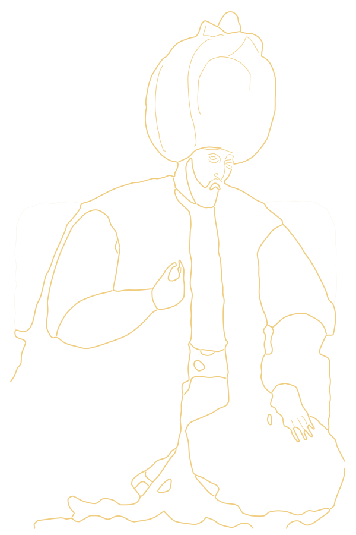

#1 Browse
Chromium, with tabs
Tabs you can drag and reopen, an address bar that searches, downloads, find in page, zoom, devtools, the shortcuts your hands already know.
مُرشِد mürşid · n. one who shows the way
Murshid is a Chromium browser with WebBrain inside. Ask about the page in front of you, or hand it a task. It reads, clicks and types in your own tabs while you watch, and runs on the AI plans you already pay for.
git clone -b murshid https://github.com/webbrain-one/webbrain.git
cd webbrain/murshid && npm install && npm start
What the guide carries
Everything you expect from Chrome, with the WebBrain agent woven in instead of bolted on.
#1 Browse
Tabs you can drag and reopen, an address bar that searches, downloads, find in page, zoom, devtools, the shortcuts your hands already know.
#2 Ask & act
Ask about any page, PDF or selection. Or tell it what you want done, and it fills the forms, clicks through the steps and compares the tabs for you.
#3 Tray
WebBrain Companion sits in the system tray and serves your Claude, ChatGPT, Gemini, Grok, Kimi, Muse and Devin subscriptions to WebBrain on 127.0.0.1. No API keys.
#4 New tab
Every new tab opens on WebBrain's page: type a question, a task or a search, and it goes straight to the panel. Preinstalled and on.
#5 Local
The Companion can run PrismML's Bonsai 2 27B and WebBrain's d1 decision model locally, sized to your GPU, checked by SHA-256.
#6 Open
GPL-3.0, built in the open with WebBrain. No telemetry in the browser. Read every line that touches your pages.
The way
Ask about the page in front of you. WebBrain reads it — text, tables, forms, PDFs, even what is only on screen — and answers beside it.
For anything that clicks or types, Plan before Act lays out the steps first. Approve them, change them, or stop.
Then it works in your real tabs, with your real sign-ins. Every move is visible, and you can take the wheel at any moment.
In the system tray
Murshid starts WebBrain Companion when it starts. Sign in once in the small tray app, and your subscriptions become one local endpoint that only this computer can reach, with a glance at how much of each plan is left.
http://127.0.0.1:8327/v1Get Murshid
Murshid is an early preview. Installers come next; today it runs from source on all three systems, with WebBrain and its new tab page preinstalled.
10 and 11, x64 and Arm64.
Installer soon · source today12 Monterey and later, Apple Silicon and Intel.
Installer soon · source todayx64 and Arm64, AppImage and .deb planned.
Installer soon · source today